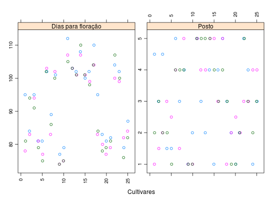
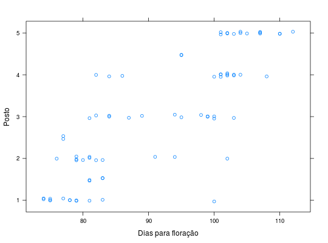

Experimento realizado em delineamento reticulado quadrado 5 \(\times\) 5, com três repetições. Os dados são referentes ao número de dias até a floração das cultivares de arroz de terras altas. São apresentados na tabela também os respectivos postos de cada dado, segundo a metodologia definida no teste de Durbin.
Um data.frame com 75 observações e 5 variáveis, em que
ZIMMERMANN (2004), Tabela 16.8, pág. 353.
Os dados de produção de arroz do mesmo ensaio estão
disponíveis em ZimmermannTb7.1.
library(lattice) data(ZimmermannTb16.8)#> Warning: data set ‘ZimmermannTb16.8’ not foundstr(ZimmermannTb16.8)#> 'data.frame': 75 obs. of 5 variables: #> $ rept : Factor w/ 3 levels "1","2","3": 1 1 1 1 1 1 1 1 1 1 ... #> $ bloco: Factor w/ 5 levels "1","2","3","4",..: 1 1 1 1 1 2 2 2 2 2 ... #> $ cult : num 1 2 3 4 5 6 7 8 9 10 ... #> $ dias : num 95 84 95 81 81 102 89 101 77 79 ... #> $ posto: num 4.5 3 4.5 1.5 1.5 5 3 4 1 2 ...p <- by(data = ZimmermannTb16.8, INDICES = with(ZimmermannTb16.8, interaction(bloco, rept)), FUN = function(dataset) { dataset$posto <- rank(dataset$dias) return(dataset) }) ZimmermannTb16.8 <- do.call(rbind, p) rownames(ZimmermannTb16.5) <- NULL xyplot(dias + posto ~ cult, outer = TRUE, groups = rept, data = ZimmermannTb16.8, jitter.x = TRUE, scales = list(y = list(relation = "free"), x = list(rot = 90)), xlab = "Cultivares", ylab = "", strip = strip.custom(factor.levels = c("Dias para floração", "Posto")))xyplot(posto ~ dias, data = ZimmermannTb16.8, xlab = "Dias para floração", ylab = "Posto", jitter.y = TRUE)